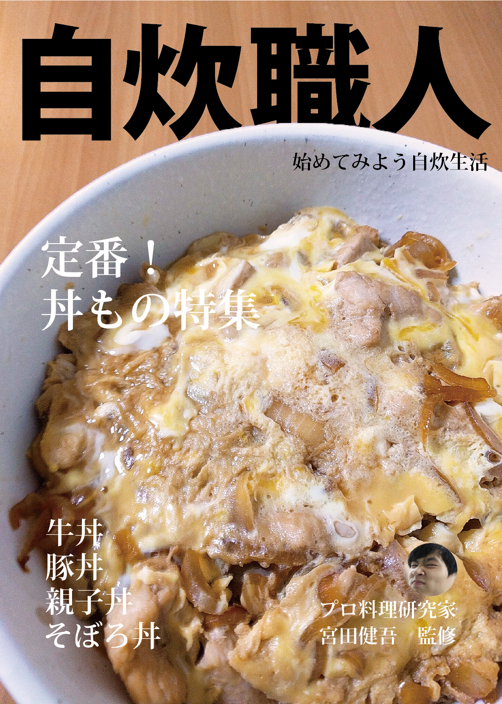

夏休みの宿題 授業課題
自炊職人
自炊職人 それは男の料理雑誌
夏休みの宿題としてオリジナルの雑誌を企画して表紙を作るという課題がでました。一人暮らしをしていて料理を始めてみたいという人をターゲットに作りました。提出当日に親子丼作って写真撮ってレイアウトしました。
制作ソフト Adobe Illustrator, Adobe Photoshop
製作期間 １日
関連する作品


夏休みの宿題 授業課題
夏休みの宿題としてオリジナルの雑誌を企画して表紙を作るという課題がでました。一人暮らしをしていて料理を始めてみたいという人をターゲットに作りました。提出当日に親子丼作って写真撮ってレイアウトしました。
制作ソフト Adobe Illustrator, Adobe Photoshop
製作期間 １日